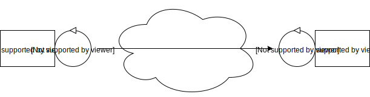

Requirements
Build a system sonar that has to send its data related to the distance and its angle to a system radar.
Premise
- the sonar has already built-in a program that reads the distance value from the world and gives it as an output;
- we have a program radar-pojo in our software system that already creates a visual radar;
Requirement analysis
Reading the requirements we can understand that the system is composed by two elements, sonar and radar
that have to communicate between them. We're dealing with a distributed system.
The two elements can communicate with a fire and forget communication since the requirements don't tell anything specific about a possible response from one or the other. The sonar will send the data to the radar. Like said before we already have sonarAlone and radarPojo elements that have to be integrated with other elements.

The two elements can communicate with a fire and forget communication since the requirements don't tell anything specific about a possible response from one or the other. The sonar will send the data to the radar. Like said before we already have sonarAlone and radarPojo elements that have to be integrated with other elements.
Problem analysis
In order to handle in the future more elements from the robot we create a new component called robot that will represent the robot's brain. As a conseguence, sonar and radar won't communicate directly but there will be the robot element as a mediator between them. We can represent the system with FSM for each of its elements.
| Radar | Sonar | Robot |
|
|
|
|
Project
Using all the elements from the previous sections we decide to use Qactor language for a fast and easy construction of the system. To be more specific:- radar and robot can be realized using the qak dsl
- sonar can be realized using a CodedQActor in order to realize a better interaction with SonarAlone program
System radar
Dispatch sonar : sonar(Distance, Theta)
Context radarCtx ip [host="localhost" port=6789]
QActor radar context radarCtx {
State init initial {
//start radar
run radarPojo.radarSupport.setUpRadarGui()
} Goto work
State work {
println("[Radar] Waiting data...")
}
Transition dataReceived
whenMsg sonar -> updateRadar
State updateRadar {
onMsg(sonar: sonar(Distance, Theta)) {
run radarPojo.radarSupport.update(payloadArg(0), payloadArg(1))
}
} Goto work
}
|
System robot
Dispatch sonar : sonar(Distance, Theta)
Context radarCtx ip [host="192.168.1.10" port=6789]
Context robotCtx ip [host="localhost" port=7000]
ExternalQActor radar context radarCtx
CodedQActor sonarActor context robotCtx className "it.unibo.sonar.SonarActor"
QActor robot context robotCtx {
State init initial {
} Goto work
State work {
println("[Robot] Waiting data...")
}
Transition dataReceived
whenMsg sonar -> sendData
State sendData {
onMsg(sonar: sonar(Distance, Theta)) {
forward radar -m sonar : sonar($payloadArg(0), $payloadArg(1))
}
} Goto work
}
|
class SonarActor(name: String, scope: CoroutineScope) : ActorBasicFsm(name, scope) {
val EXEC_CMD: String = "sudo ./sonarAlone"
var sonarData: BufferedReader? = null;
var distance: String = ""
var theta: Int = 0
override fun getInitialState(): String {
return "init"
}
override fun getBody(): (ActorBasicFsm.() -> Unit) {
return {
state("init") {
action {
val process: Process = Runtime.getRuntime().exec(EXEC_CMD)
sonarData = BufferedReader(InputStreamReader(process.getInputStream()))
}
transition(edgeName = "goto", targetState = "work", cond = doswitch())
}
state("work") {
action {
Thread.sleep(2000)
distance = sonarData!!.readLine()
theta = Random().nextInt(360)
}
transition(edgeName = "data obtained", targetState = "sendData", cond = doswitch())
}
state("sendData") {
action {
forward("sonar", "sonar(${distance},${theta})", "robot")
}
transition(edgeName = "data sent", targetState = "work", cond = doswitch())
}
}
}
}
|
|